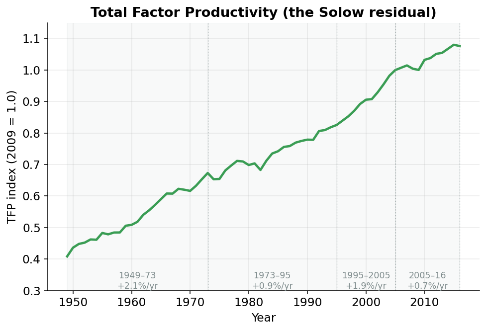

Total Factor Productivity: the Leftover That Runs the Show
The puzzle: where does the extra growth come from?
So far the story has been about stuff. We counted the workers and their hours, and we built an index of the machines, buildings, and equipment they work with. Add more of either and the economy can make more, that part is common sense.
But here is the strange thing. When you actually add up how much output you’d expect from all those extra workers and all those extra machines, the economy keeps producing more than that. Year after year, there’s a surplus the inputs alone can’t explain.
Think of two cooks in the same kitchen with the same ingredients. One turns out a flat, gray dinner; the other turns out something you’d pay for. Nothing on the counter is different. What’s different is the recipe: the know-how, the technique, the way everything is put together.
Economists call that leftover ingredient total factor productivity, or TFP.1 It’s better technology, smarter organization, sharper management: everything that lets the same workers and the same machines produce more than they did before.
1 The word “factor” is just economist-speak for an input: labor and capital are the two “factors of production.” So total factor productivity means productivity of all the inputs taken together, not just labor.
We never see it directly. We back it out
Here’s the catch that trips people up. You can’t go measure TFP. There’s no government survey that calls up factories and asks how much “know-how” they have this quarter.
So we do something clever. We measure everything we can (output, capital, labor) and then we ask: how much of the output is left unexplained once we’ve credited the workers and the machines? That leftover is our estimate of TFP. Because it’s what’s left over after the accounting, it has a famous name: the Solow residual.2
2 Named after Robert Solow, who won a Nobel Prize partly for showing in the 1950s that most of US growth came from this residual, not from piling up more machines. The word “residual” just means leftover.
This is the heart of the page, so let’s state it carefully.
The production function from the last few pages says output \(Y\) comes from capital \(K\), labor \(L\), and a productivity level \(A\):
\[ Y = A \cdot K^{\alpha} \, L^{1-\alpha} \]
Here \(\alpha\) (alpha) is capital’s share: the slice of income that goes to the owners of machines and buildings, about 0.36 in the US. Since we know \(Y\), \(K\), \(L\), and \(\alpha\), we just rearrange to solve for the one thing we don’t know, \(A\):
\[ A = \frac{Y}{K^{\alpha} \, L^{1-\alpha}} \]
That \(A\) is total factor productivity. The bottom of the fraction is “the output the inputs explain.” Dividing actual output by it leaves the part nothing else accounts for: the Solow residual. We never observe TFP; we back it out.
Doing it in code
In the project this calculation lives in tfp.py, in a function called compute_annual_tfp. The two lines that matter are short. They’re just Note 1 written in Python.
log_inputs = kshare * np.log(icap_lag) + (1 - kshare) * np.log(ilab)
ioutput = sample["qgdpnfb"] / np.exp(log_inputs)
iprod_annual = (ioutput / ioutput.loc[base_year]).rename("iprod_annual")Let’s read it like a sentence.
The first line builds the bottom of our fraction: “the part inputs explain.”3 kshare is our \(\alpha\); icap_lag is the capital index from the previous page, lagged one year4; and ilab is the labor input: total hours worked, scaled so 2009 equals 1.
3 It looks fancy because of the logs and the exp, but \(e^{\alpha \log K + (1-\alpha)\log L}\) is just a tidy way of writing \(K^{\alpha}L^{1-\alpha}\). Logs turn the multiply-and-power into an add, which computers handle more gracefully.
4 Why last year’s capital? Because the factories and machines you actually work with this year are the ones that were already standing on January 1, built and bought in years gone by. So year t’s output is produced with the stock in place at the end of year t-1.
The second line does the division from the callout: actual nonfarm-business output (qgdpnfb) divided by the part the inputs explain. What’s left, ioutput, is raw TFP.
The third line is pure bookkeeping. Raw TFP comes out in awkward units, so we divide every year by its 2009 value. That normalizes the series to an index where 2009 = 1.0.5 After that, a value of 1.20 simply means “20% more productive than in 2009,” and 0.80 means “20% less.” That annual index is called iprod_annual.6
5 An “index” is just a series rescaled to equal 1 (or 100) in a chosen base year, so you read everything as a ratio to that year. The level is meaningless on its own; only the changes matter.
6 Once it’s been spread out to quarters a couple of sections from now, the quarterly version is just called iprod.
What the leftover actually did
Now the payoff. Once you have TFP year by year, you can watch the recipe of the American economy get better, and stall, and recover, and stall again. Figure 1 tells one of the most important stories in all of growth economics.

Read the line left to right and you get four distinct chapters:
- 1949-1973, the “Golden Age.” TFP grew about 2.1% a year, blistering by historical standards. The recipe was improving fast: postwar technology, the interstate highways, mass electrification finishing its work. Nearly half of all growth in this era came from the leftover, not from more machines or workers.
- After 1973, the great slowdown. Growth fell to roughly 0.9% a year and stayed there for two decades. Economists still argue about why: oil shocks, the shift to services, the exhaustion of earlier breakthroughs. It’s called the “productivity puzzle” because no single culprit fully explains it.
- The late-1990s IT rebound. Computers and the internet finally showed up in the numbers, and TFP growth jumped back to about 1.9% a year. For a while it looked like the good times were back.
- The recent slowdown. Since the mid-2000s, growth has sagged again to roughly 0.7% a year, weaker even than the 1970s slump. Whether this is permanent is one of the biggest open questions in economics today.
These four numbers aren’t trivia. The difference between 2% and 0.7% TFP growth, compounded over a working lifetime, is the difference between a country where your children are dramatically richer than you and one where they’re barely better off.
From a yearly number to a smooth potential trend
Two quick wrinkles, then we’re done, and you can keep them light.
The TFP we just computed is annual: one number per year. But the rest of the model runs on quarters (four data points per year). So the code spreads each annual figure across its four quarters using an interpolation method called Denton-Cholette.7 You don’t need the machinery; just know the quarters are guaranteed to average back to the year.
7 Interpolation just means filling in the in-between points. Denton-Cholette does it with one rule: the four quarters must average back to the true annual number, so nothing is invented. The yearly total is preserved exactly. It borrows the shape of the quarter-to-quarter wiggles from a closely related series that we do observe quarterly.
The second wrinkle is the same move you saw with labor. The raw TFP line is bumpy. It dips in recessions and spikes in booms, because in a downturn firms hang onto workers they aren’t fully using. For potential GDP we want the underlying trend, not the business-cycle noise. So the code regresses TFP on cyclical controls plus a set of trend pieces, then strips the cyclical part back out, leaving a smooth potential TFP path called iprodfe. It’s the same cycle-stripping logic from the labor page, applied to the recipe instead of the workers.
We’ve got all three. Now let’s cook
That completes the pantry. We now have all three ingredients in potential form: potential labor, potential capital, and potential TFP, each one a smooth trend with the business cycle scrubbed out.
A recipe with the ingredients laid out isn’t dinner yet. The next page does the cooking: it feeds all three back into the production function and Fisher-aggregates the pieces into a single headline number: potential GDP.